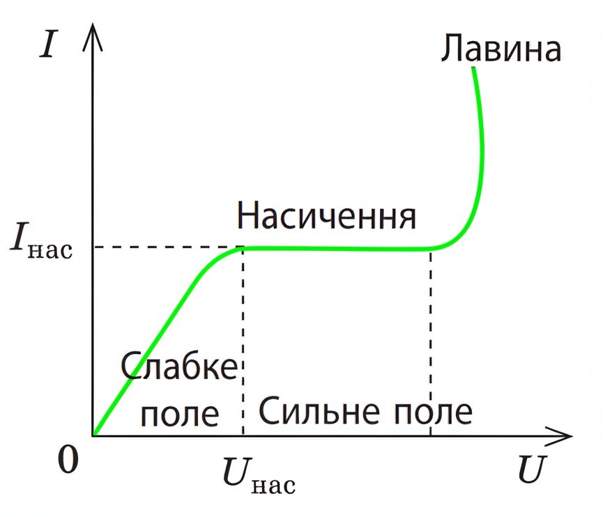

Електричний струм у газах#
Близько 99% усієї речовини у Всесвіті існує у формі плазми. Цей стан характерний для речовини зірок, галактичних туманностей, а також заповнює міжзоряний простір. На нашій планеті плазма також досить поширена: вона присутня в каналах блискавок, у полум'ї, всередині світлових рекламних конструкцій. Саме плазмові процеси в атмосфері Землі спричиняють такі явища як магнітні бурі та полярні сяйва.
Плазма - це частково або повністю іонізоване газове середовище, де концентрації додатних і від'ємних зарядів приблизно рівні.
У цьому матеріалі ми розглянемо процеси іонізації газу (утворення плазми) та явища, що відбуваються при розміщенні іонізованого газу в електричному полі.
Умови перетворення газів на провідники#
Гази, на відміну від металів і електролітів, складаються з електрично нейтральних атомів і молекул. За звичайних умов вони практично не містять вільних носіїв заряду, що робить їх діелектриками.
Проте, якщо певним чином змусити електрон відокремитися від атома, в газовому середовищі утворяться додатньо заряджені іони та вільні електрони. Крім того, деякі електрони можуть приєднуватися до нейтральних молекул або атомів, формуючи від'ємні іони.
Іонізація - процес перетворення нейтральних молекул і атомів на додатні та від'ємні іони, а також вільні електрони.
Для відриву електрона від атома необхідно надати йому певну мінімальну енергію — енергію іонізації (\(W_i\)), величина якої залежить від хімічної природи газу. Існує декілька механізмів іонізації, що відрізняються джерелом енергії:
Термічна іонізація - процес іонізації, що відбувається за рахунок енергії, що виділяється під час непружного зіткнення молекул (атомів). Чим більша температура газу, тим більша швидкість молекул (атомів) і тим більша ймовірність, що внаслідок зіткнення відбудеться іонізація.
Іонізація випромінюванням - процес іонізації, що відбувається за рахунок енергії від високочастотного електромагнітного випромінювання. Таке випромінювання здатне "вибити" електрон з молекули (атома), тобто відбудеться процес іонізації випромінюванням.
Коли іонізований газ поміщають в електричне поле, додатні іони починають рухатись у напрямку силових ліній поля, а від'ємні іони та електрони — в протилежному напрямку. Цей упорядкований рух заряджених частинок створює електричний струм у газі.
Електричний струм у газовому середовищі (газовий розряд) являє собою направлений рух вільних електронів та іонів обох знаків.
Самостійний і несамостійний газовий розряд#
Експериментальні дослідження демонструють: після усунення чинника, який спричинив іонізацію газу (відключення випромінювання, видалення джерела нагрівання), газовий розряд, як правило, припиняється. Це явище пояснюється кількома процесами:
Відбувається рекомбінація - процес об'єднання електронів з додатними іонами, що призводить до утворення нейтральних молекул або атомів.
Анод поглинає вільні електрони з газового середовища.
Біля електродів іони перетворюються на нейтральні частинки: від'ємні іони віддають надлишкові електрони аноду, а додатні іони отримують відсутні електрони від катода. Після цього нейтралізовані частинки повертаються в газове середовище.
Несамостійним газовим розрядом називають розряд, який існує виключно під час дії зовнішнього іонізуючого фактора.

Рис. 1. Вольт-амперна характеристика (ВАХ) газового розряду
Логічно припустити, що збільшення напруги між електродами обов'язково призведе до зростання сили струму, навіть при незмінній інтенсивності іонізуючого чинника. Однак практика показує, що це не завжди відповідає дійсності. Залежність сили розрядного струму від міжелектродної напруги при сталих характеристиках іонізатора зображена на рис. 1. Графік містить кілька характерних зон.
Зона 1 (пряма лінія, що йде під гострим кутом до осі абсцис). У цій області залежність сили струму від напруги відповідає закону Ома.
Зона 2 (горизонтальна лінія). Тут при підвищенні напруги сила струму залишається незмінною. Це пояснюється тим, що в сильному електричному полі усі заряджені частинки, утворені іонізатором, досягають електродів.
Струмом насичення називають максимально можливу силу струму, яка може бути досягнута при дії конкретного іонізатора.
Зона 3 (частина, що йде після горизонтальної лінії). У цій області спостерігається стрімке зростання сили струму при незначному підвищенні напруги. Таке явище обумовлене іонізацією газу електронним ударом, внаслідок якої кількість вільних заряджених частинок збільшується за лавиноподібним механізмом.
Електрони, що утворилися в процесі ударної іонізації, рухаються до анода і врешті поглинаються ним. Однак розряд може тривати навіть після припинення дії зовнішнього іонізатора. Одним із джерел нових електронів є поверхня катода: додатні іони бомбардують катод і вибивають з нього електрони - відбувається емісія (випромінювання) електронів з катодної поверхні.
Самостійним газовим розрядом називають розряд, який підтримується без участі зовнішнього іонізуючого фактора.
Залежно від параметрів газового середовища (тиску, температури), конфігурації електродної системи та величини прикладеної напруги виділяють чотири основні типи самостійних газових розрядів: іскровий, тліючий, дуговий та коронний.
Різновиди самостійних газових розрядів#
Іскровий газовий розряд виникає за атмосферного тиску та значній міжелектродній напрузі. Візуально проявляється як яскраві зигзагоподібні розгалужені світлові канали, що існують лише десятки мікросекунд і супроводжуються акустичними ефектами (тріском, потріскуванням або громом).
Сфери застосування: запалювальні системи бензинових двигунів, технологічна обробка надміцних металів, системи захисту ліній електропередач від перенапруги (розрядники). Найбільш вражаючий приклад іскрового розряду в природних умовах - блискавка.
Тліючий газовий розряд формується при невисокій напрузі між електродами та низькому тиску газу (десяті й соті частки міліметра ртутного стовпчика). За таких умов середня відстань між молекулами газу достатньо велика, щоб навіть у відносно слабкому електричному полі електрони розганялися до енергій, необхідних для ударної іонізації.
Сфери застосування: енергоефективні джерела світла (люмінесцентні лампи), декоративні газорозрядні трубки різних кольорів (колір визначається хімічним складом газу). Особливо важливе застосування — когерентні джерела світла (газові лазери).
Дуговий газовий розряд (електрична дуга) спостерігається при надвисоких температурах (понад 4000 °С) практично при будь-якому тиску. Має вигляд яскравого дугоподібного світіння. При такій температурі з поверхні катода відбувається інтенсивна термоелектронна емісія, а в стовпі гарячого газу - термічна іонізація. Висока температура електродів підтримується завдяки бомбардуванню їх поверхні зарядженими частинками, прискореними електричним полем.
Сфери застосування: металургійні процеси (електродугові печі, зварювання металів), потужні освітлювальні системи (прожектори) тощо.
Коронний газовий розряд виникає при тиску близькому до атмосферного в сильно неоднорідному електричному полі (напруженістю понад 500 кВ/м). Такі поля утворюються поблизу електродів з великою кривизною поверхні (гострі кінці, тонкі дроти). Візуально проявляється як слабке фіолетове світіння у формі корони навколо загострених ділянок.
Сфери застосування: очищення повітря та газів (електрофільтри), детектори радіоактивного випромінювання (лічильники Гейгера-Мюллера); принцип коронного розряду використовується в конструкції блискавковідводів. У природі зазвичай спостерігається перед або під час грози на вершинах високих об'єктів (щогл, веж, скель); цей феномен також відомий як «вогні святого Ельма».
При зіткненні електрона з атомом не обов'язково відбувається вибивання електрона - можлива передача частини енергії електронній оболонці атома. У результаті атом переходить у збуджений стан з підвищеним енергетичним рівнем. Однак у такому стані атом перебуває надзвичайно короткий проміжок часу (лише кілька наносекунд) - майже миттєво повертаючись до основного стану з випромінюванням надлишкової енергії у вигляді кванта світла. Оскільки в процесі газового розряду збуджується величезна кількість атомів, газовий розряд зазвичай супроводжується характерним світінням.
Практичні навички розв'язування задач#
Задача. Визначити мінімальну швидкість, яку повинен мати електрон для іонізації атома Гідрогену. Відомо, що енергія іонізації атома Гідрогену становить 13.6 еВ (електрон-вольт - позасистемна одиниця вимірювання енергії: 1 еВ = \(1.6 · 10^{-19}\) Дж).
Аналіз. Для успішної іонізації атома Гідрогену кінетична енергія електрона повинна бути не меншою за енергію іонізації цього атома. Мінімальну швидкість електрона визначимо з умови: \(E_k = W_i\).
Вихідні дані:
\(W_i = 13.6\) еВ = \(13.6 \cdot 1.6 \cdot 10^{-19}\) Дж = \(21.8 \cdot 10^{-19}\) Дж - це енергія іонізації електрона
\(m_e = 9,1 \cdot 10^{-31}\) кг - маса електрона
Шукана величина: \(v\) - швидкість електрона
Розробка математичної моделі та її розв'язання.
Кінетична енергія електрона визначається формулою: \(E_k = \frac{m_e v^2}{2}\), де \(m_e\) — маса електрона. З умови \(E_k = W_i\) отримуємо: \(\frac{m_e v^2}{2} = W_i\). Звідси:
Проведемо перевірку розмірності та обчислимо числове значення:
Відповідь: Мінімальна швидкість електрона для іонізації атома Гідрогену становить \(2.2 \cdot 10^6\) м/с.